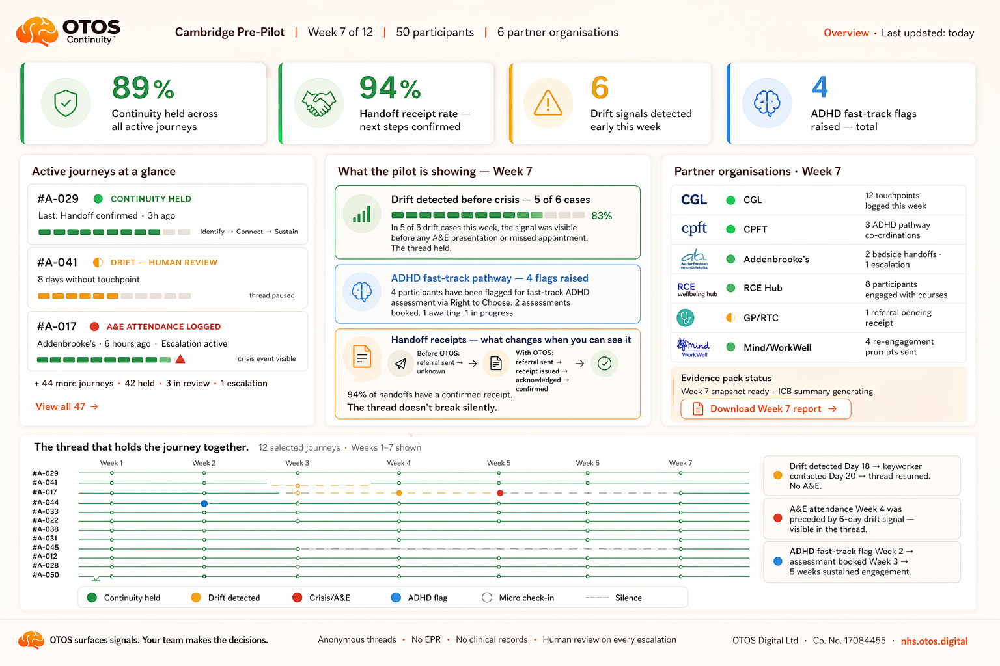

For the attention of: Scott — Cambridgeshire County Council · Public Health, Drugs & Alcohol · Inclusion Health
Re: The conversation we started — everything you asked me to send.
From: Dean Butler — Founder, OTOS Continuity
Status: Discovery, not a funding ask · No procurement
The cost case
A cost-redirection opportunity, hiding in current spend.
This is not a new cost. It is a smarter use of money the system is already spending — reactively, repeatedly, and across budget lines that never speak to each other.
Thank you for the meeting, and for being straight with me: no budget right now, but send everything. So here it is — built to make a hard decision easy. OTOS Continuity is a bounded pre-pilot for adults cycling through addiction and crisis, where unresolved ADHD may be the underlying driver of repeat demand. The whole case rests on one idea you'll recognise from your own data: the cost doesn't disappear — it moves to a different budget line.
1
The spend is already happening — reactive, fragmented, repeating across the whole system.
2
The driver is often missed — undiagnosed ADHD beneath the addiction the system treats first.
3
The test is small and bounded — 50 people, 12 weeks, an evidence budget, not a rollout.
This is for the Local Authority level — county-wide public health. The purpose is discovery: does OTOS fit a priority gap in the Cambridgeshire drugs and alcohol pathway?
Private discovery briefing · Not a pitch · No procurementPage 01 / 08
OTOS ContinuityThe ripple cost · 02 / 08
The full ripple cost
One person. One year. The cost ripples across the whole system.
£90,000–£200,000+
True societal cost, per person, per year — for a high-risk ADHD + addiction case, once all three tiers are counted.
Tier 1 · The individual
Direct costs
£30k–£120k+
A&E, ambulance, ICU, acute beds
Mental-health crisis care & admissions
Drug & alcohol treatment / rehab
GP, housing, police, probation, prison
Official figures mostly stop here
Tier 2 · Family & household
Ripple costs
£5k–£60k+
Partner stress, GP, therapy, sick leave
Children: CAMHS, safeguarding, education
Carers: burnout, lost work, financial support
Relationship breakdown & instability
Usually invisible in national data
Tier 3 · Community & system
Knock-on costs
£7k–£40k+
Local-authority cleansing, ASB, safety
Employers: HR time, absence, lost output
Benefits, DWP assessments, housing
Wider justice, victim support, GDP loss
Spread across the whole system
Official benchmark
£58k–£65k
Estimated annual cost of an identified crack/heroin addict — usually Tier 1 only.
VS
OTOS full ripple model
£90k–£220k
When direct, family and system-wide ripple costs are included.
~200,000 high-risk ADHD + addiction adults nationally → an avoidable demand of £4bn+ per year.
Tier ranges are an OTOS full-ripple cost model built from published unit costs and cross-budget assumptions — a way of seeing the whole burden, not a guaranteed per-case invoice.
Here is the same logic, sized for Cambridgeshire & Peterborough — and held to a strict rule: every figure carries its label, and modelling is never quietly passed off as fact. The pre-pilot exists precisely to replace modelling with locally validated evidence.
Metric
Figure
Label
Note
Adults in treatment, Cambs + Peterborough
4,175
Published
Current planning denominator.
Estimated ADHD + addiction risk cohort
800–900
Modelled
From published denominators & ADHD prevalence. Subject to local validation.
Planning model · not a forecast or guaranteed saving
Against a modelled annual baseline of £90,000 per person — a £90m total annual burden — the forecast gross potential of identifying and supporting ADHD within addiction care:
Low case
£18.0m
Base case
£53.1m
High case
£67.5m
Gross annual potential — not guaranteed cash release. Figures combine observed counts, modelled overlap and assumption-based forecasting. The point of a small local test is to find out how much is real, here.
Private discovery briefing · Planning model, not a linked patient-level dedupePage 03 / 08
Dean ButlerThe pre-pilot cost · 04 / 08
The pre-pilot cost · this page only
£91,520. An evidence budget — not a therapy budget.
This is the only place across everything I have prepared where the pre-pilot cost appears in full. It belongs here, in the commissioning conversation. And the most useful way to read it is against a number you already know well.
£91,520
OTOS pre-pilot 50 people · 12 weeks
≈
£90,000
Residential rehab 1 person · 3 months
What £91,520 covers
OTOS Continuity platform infrastructure, 12 weeks
Co-production with clinical & community partners
Independent evaluation and evidence generation
Participant coordination & human-review capacity
Data and governance infrastructure
Evidence pack for an ICB commissioning decision
What it is not
Not a therapy budget — no clinical treatment is funded here
Not a commitment to scale — a bounded 12-week question
Not a technology procurement — a locally validated evidence play
Not a new service — it wraps around what already exists
£4.07
Return per £1 invested in addiction continuity. Turning Point / LSE comparator — an evidence candidate, not a promise of local return.
This is not a request to fund a full rollout. It is a request to fund a clear question: does a receipted continuity thread, applied to this cohort, measurably reduce silent disengagement?
Dean ButlerThe evidence behind the savings · 05 / 08
The evidence behind the savings
Why the underlying driver is worth addressing.
None of these are OTOS outcomes. They are published evidence candidates the system already accepts — and together they explain why so much current spend lands too late.
25%
of addiction-treatment patients have undiagnosed ADHD
Pooled research data
86%
of alcohol-dependent adults also present mental-health problems
Published
74%
starting addiction treatment have mental-health needs
Gov UK NDTMS
61.3%
improvement in addictive-disorder outcomes after ADHD diagnosis & treatment
START study · France 2025
12.2%
ADHD prevalence found in UK detox units
Huntley, 2012
54%
of suicides in mental-health patients involved substance use
Published
The national annual burden.
£17bn
avoidable annual cost of untreated ADHD
NHS England ADHD Taskforce 2025
£27.44bn
annual cost of alcohol harm
Published
£44.44bn
combined total annual burden to the UK
Sum of the above
The system already spends heavily — but often too late. OTOS asks to test a lighter, earlier intervention around a cohort that is already costing too much to lose.
Private discovery briefing · Published evidence candidates, not OTOS outcomesPage 05 / 08
Dean ButlerA team of services · already in motion · 06 / 08
Already in motion
This is not an idea on paper. It is a team of services, forming now.
You are not being asked to back something speculative and alone. Around this cohort I am building a team of services — and the approaches are now going out officially, not just verbally.
One team of services · OTOS holds the thread between them
Ready now: partner briefs prepared for the CPFT ADHD Team, CGL & CRS, Alcohol Liaison at Addenbrooke's, RCE Wellbeing Hub, and Mind / WorkWell / therapy — each written to its own service.
Live this week: my diagnostic letter is going to the CPFT Adult ADHD Team to progress the NHS pathway; CGL and CRS keyworkers and team leaders are already engaged; Alcohol Liaison met me at the bedside.
Already published precedent: CGL's own work, via Nottingham CVS, on ADHD assessment within substance-use services — this is happening; if I don't open it here, someone will open it eventually.
Prepared next: the commissioner-facing pilot dashboard, the service blueprint and continuity roadmap — the evidence scaffolding a 12-week demonstrator would run on.
Thea is exactly who this is for. If you can introduce me, I would value it enormously — by all accounts she is the one person straddling and supporting both CPFT and CGL across this gap, and CRS have already mentioned me to her. She is, I suspect, the person who could make a Cambridgeshire demonstrator real on the ground.
On funding — softly. I am quietly seeking an Angel investor to underwrite the demonstrator so it can stand on independent footing. But I would far rather this was led from inside the system that already carries the cost. If Public Health could free up or part-hold the model from existing spend — or if you saw a route to backing it yourself — that would be the cleanest possible start.
Private discovery briefing · Partners invited / in discussion · No endorsement assumedPage 06 / 08
OTOS ContinuityWhat the pilot shows · 07 / 08
What the pilot shows
A live pilot produces exactly this — commissioner-grade evidence.
This is not a promise of a result; it is the measurement instrument. A 12-week Cambridgeshire demonstrator would put a week-by-week, commissioner-facing view in front of you — is the thread holding, where is drift appearing, and is the cohort being caught earlier.

Illustrative dashboard · continuity held, handoff receipts, drift detected before crisis, ADHD fast-track flags, and per-partner activity — the evidence pack a pre-pilot generates for an ICB commissioning decision. OTOS surfaces signals; partner teams make the decisions. Figures shown are illustrative, not results.
Private discovery briefing · Illustrative pilot dashboard, not resultsPage 07 / 08
OTOS ContinuityThe local ask · 08 / 08
The local ask · Cambridgeshire County Council
Three questions — starting with a conversation.
We are not asking you to commission anything. We are asking three questions — and inviting you to tell us which route makes sense.
Question 1
Does this match what you see?
Is co-occurring ADHD and addiction a visible gap in the Cambridgeshire pathway? Do these people show up in your data?
Question 2
What is the right route?
Public Health commissioning, ICB innovation, joint sponsorship, VCSE partnership — what is cleanest for a 12-week demonstrator here?
Question 3
Who else is in the room?
What is the minimum set of decision-makers to make a properly scoped pre-pilot real in this county — Thea included?
And two practical things only you can offer:
Guidance on where existing drugs-and-alcohol commissioning spend could hold, or part-hold, the model without requiring new budget.
A route to formal commissioning — the longer-term aim is a permanently funded, joined-up ADHD-addiction pathway in Cambridgeshire.
The ask
A short follow-up conversation — and, if you're willing, an introduction to Thea. Not a funding commitment. Not a procurement. Just a decision about whether this fits the Cambridgeshire pathway, and who needs to be at the table next.
Boundary, named
OTOS does not diagnose, prescribe, treat, replace services or make clinical decisions. OTOS surfaces signals; partner teams make the decisions. All savings figures are modelled gross potential, not guaranteed cash release; published figures are evidence candidates, not OTOS outcomes. No Council, CPFT or CGL endorsement or agreed pilot is claimed; any work is subject to governance.
Diagnose the ADHD. Treat the driver. The cost chain collapses.With thanks — Dean Butler.
Founder, OTOS Life / Out The Other Side · OTOS Digital Ltd · Co. No. 17084455
dean@otos.life · 07585 899 235
Private discovery briefing · Discovery, not a pitchPage 08 / 08